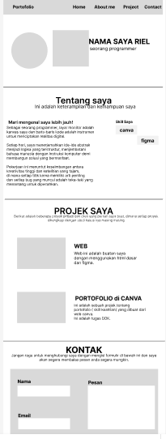

Hi, Saya Risa Nafeeza Ayu Ramadhani
Saya adalah siswa aktif di smkn 4 tasikmalaya jurusan pplgTentang saya
Di sini Anda akan menemukan informasi menarik mengenai diri saya, apa yang saya kerjakan, serta keterampilan yang saya miliki saat ini, khususnya di bidang pemrograman dan teknologi.
Kenali Saya!
Saya adalah seorang siswi dari jurusan PPLG di SMKN 4 Tasikmalaya,saya mempunyai ketertarikan yang besar penasaran dengan dunia teknologi seperti software engineering dan pemrograman.Ada kepuasan tersendiri pas liat logika yang disusun rapi akhirnya bisa jalan jadi sebuah sistem yang fungsional.Membuat program dari kodingan yang rumit, program program itu di buat untuk memudahkan pekerjaan.
Di Jurusan PPLG ini,saya ingin mengasah kemampuan berpikir secara logika dan kreatif. Belajar menguasai berbagai bahasa pemrograman.Membuat program program baru dari materi pplg smk. Mengulas kembali materi pplg yang sudah di dipelajari, saya belajar lagi gimana program tersebut berjalan ,mempelajarinya lebih dalam.
Bagi saya, ngoding itu bukan sekadar ngetik baris-baris kode atau nyari error yang ngumpet tapi dari sana saya belajar mencari kesalahan,memperbaikinya memecahkan masalah itu sehingga program tersebut bisa berjalan dengan benar dan berguna
Skill Saya
HTML
CSS
Projek-Projek saya
Di sini Anda akan menemukan beberapa proyek pribadi dan klien yang saya buat, masing-masing proyek dilengkapi dengan studi kasusnya sendiri.

Ecobrik Pot dari Galon
Projek ini mengubah galon bekas (sampah plastik)menjadi pot tanaman yang unik dan cantik.Pot untuk mempercantik ruangan maupun pekarangan rumah/sekolah.Ini adalah projek pertama saya di smk.Projek ini bertujuan untuk memangfaatkan sampah plastik dan mengurangi limbah sampah plastik.
Portofolio
Projek portofolio.Projek portofolio ini mungkin belum sepenuhnya sempurna tetapi dari sini saya jadi tahu dan mahir dalam kodingan html dan ccs.Projek ini bertujuan untuk mempermudah pekerjaan sebelum membuat kode(desain awal).Karena tanpa desain ini kita akan kebingungan bagaimana rancangan awal saat membuat code. link.figmaKontak
Jangan ragu buat hubungi saya lewat formulir di bawah ini ya! saya bakal secepatnya balas pesan anda.